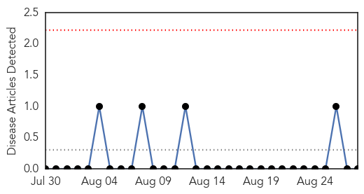
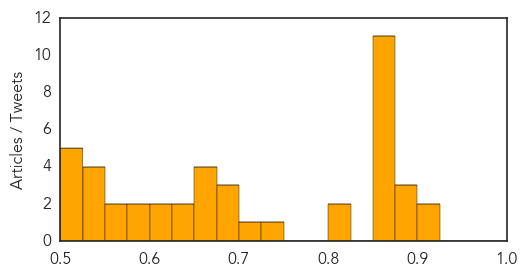

Mold/Fungal
30-Day Web Trend
0 alerts, 0 warnings

30-Day Twitter Trend
0 alerts, 0 warnings

Article Locations

Article Confidences

Top Articles:
-
No articles found for Aug 28, 2014
Top Tweets:
-
No tweets found for Aug 28, 2014
Unknown
30-Day Web Trend
1 alerts, 0 warnings

30-Day Twitter Trend
6 alerts, 1 warnings

Article Locations

Article Confidences
Top Articles:
- 0.917
- Chicago Tribune
- 0.910
- The world windows to Thailand
- 0.883
- KRNV, Reno, NV
- 0.883
- KRNV, Reno, NV
- 0.883
- KRNV, Reno, NV
- 0.874
- Experts: Heed the need to prevent infectious disease
- 0.866
- Aymara women chat with each other during a ceremony in Calamarca
- 0.866
- Hamas' Meshaal says resistance won't cease, urges Egypt to open Rafah crossing
- 0.866
- U.N. chief "alarmed" at reports of wider fighting in Ukraine
- 0.866
- Turkish President Erdogan appoints Davutoglu acting prime minister
- 0.866
- A helmet lies along a roadside as Thai security personnel inspect the site of a bomb attack in Pattani province
- 0.866
- Ukrainian PM Yatseniuk asks U.S., EU and G7 to freeze Russian assets
- 0.866
- Ukraine rebel leader says Russian soldiers in their ranks
- 0.866
- France's Hollande says "unacceptable" if Russian troops in Ukraine
- 0.866
- Police officers help an elderly couple move their belongings from their home after they received threats from street gang Mara 18 in Tegucigalpa
- 0.861
- Texas Cyclospora Cases Traced to Fresh Cilantro From Mexico
- 0.825
- Thousands at risk of brain-eating amoeba found in Louisiana water system
- 0.817
- Cyclosporiasis Cases Linked To Fresh Cilantro From Mexico
- 0.735
- Brain-eating bacteria found in Louisiana parish water supply
- 0.703
- Hospitals' hand washing strategies effective in reducing patient infection rates
- 0.695
- Airlines stop flights as US expert warns outbreak will 'worsen' ▪ Iranian.com
- 0.694
- Brain-eating amoeba detected in Louisiana
- 0.689
- Gaza: Providing Medical Care Through War and Truce
- 0.672
- ‘Docs, apart from govt, to blame for rise in drug-resistant TB’
- 0.663
- Not Too Early to Get Flu Shot
- 0.663
- Second district farm hit by anthrax
- 0.653
- The Lancet: China-themed issue
- 0.633
- Vietnam preventing A/H5N6 outbreak - Xinhua
- 0.627
- 8 Auburn University students test positive for TB infection, not the actual disease
- 0.622
- Brain-Eating Amoeba Found In Louisiana Parish's Water System
- 0.608
- CVS Caremark Announces New Clinical Affiliation with MedStar Health
- 0.594
- Patients with intestinal polyps have lower risk of dying from cancer
- 0.578
- JJ’s Hera Therapeutics Presents Antiviral Drug For HPV
- 0.559
- Three Louisiana Towns Warned To Keep Tap Water Out Of Noses
- 0.554
- Red squirrels under threat from rare leprosy
- 0.548
- Brain-eating amoeba found in La. parish's water system
- 0.548
- Brain-eating amoeba found in La. parish's water system
- 0.545
- Govt bans livestock movement in Zambezi
- 0.533
- Urgent action needed on climate change to cut health risks, warns WHO
- 0.525
- VN tackles latest avian flu outbreak
- 0.521
- Killer Amoeba Found in Louisiana Water System (Video)
- 0.513
- Hospitals on high alert once again
- 0.511
- Jamaica Hospital testing lung drug
- 0.508
- Five Ways Summer's Heat Brought Hazardous Beach, Lake Conditions
Top Tweets:
- 0.523
- Hoy ha sido un d√≠a de eso ricos ‚ò∫Ô∏èüòäüò≥üòöüòç